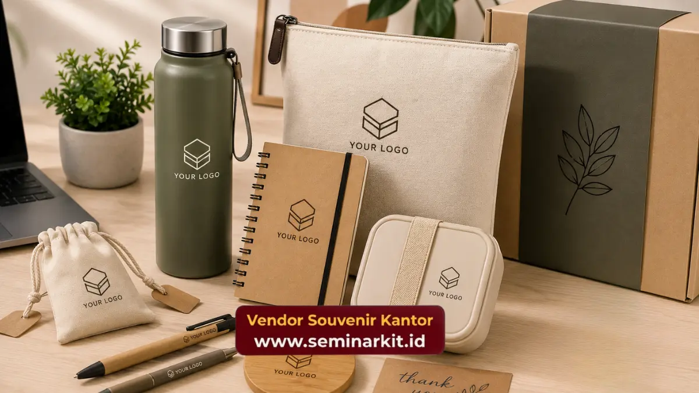

Souvenir kantor budget 100 ribu adalah pilihan merchandise korporat seharga sekitar seratus ribu rupiah per unit yang tetap tampil elegan berkat pemilihan bahan dan desain yang tepat. Harga ini termasuk kategori menengah dalam corporate gifting, cukup untuk item seperti tumbler, notebook custom, atau gift set kecil. Dengan strategi pemesanan yang tepat, kualitas premium tetap bisa didapat tanpa membengkakkan anggaran.
- Budget 100 ribu masuk kategori souvenir kantor kelas menengah yang mencakup tumbler, notebook, dan gift set sederhana.
- Kualitas tetap terjaga jika memilih bahan yang tepat dan vendor yang berpengalaman dalam produksi massal.
- Custom logo perusahaan tetap bisa diaplikasikan pada rentang harga ini melalui teknik cetak atau ukir yang efisien biaya.
- Pemesanan dalam jumlah besar umumnya memberi keleluasaan harga per unit yang lebih kompetitif.
- vendorsouvenirkantor.web.id menyediakan berbagai pilihan souvenir kantor budget 100 ribu yang siap custom logo untuk kebutuhan korporat.
Apa Itu Souvenir Kantor Budget 100 Ribu?
Souvenir kantor budget 100 ribu merujuk pada kategori merchandise korporat dengan harga satuan berkisar di angka seratus ribu rupiah, umumnya dipesan dalam jumlah tertentu untuk kebutuhan internal maupun eksternal perusahaan. Kategori harga ini banyak dipilih karena berada di tengah antara souvenir promosi murah dan corporate gift premium, sehingga cocok untuk berbagai acara resmi tanpa membebani anggaran.
Pada rentang harga ini, perusahaan biasanya sudah bisa mendapatkan produk dengan bahan yang lebih baik dibanding souvenir promosi standar, seperti tumbler stainless, notebook dengan cover kulit sintetis, atau gift set berisi dua hingga tiga item kecil. Pemilihan kategori harga yang tepat sejak awal membantu tim procurement menentukan jenis produk yang realistis untuk dipesan.
Souvenir kantor budget 100 ribu juga sering menjadi titik keseimbangan yang dicari perusahaan menengah, di mana kesan profesional tetap harus terjaga namun jumlah penerima souvenir cukup banyak, misalnya untuk seluruh karyawan atau peserta seminar.
Mengapa Perusahaan Memilih Budget Ini untuk Souvenir Kantor?
Rentang harga seratus ribu rupiah dipilih karena menawarkan keseimbangan antara kualitas dan efisiensi anggaran, terutama untuk pemesanan dalam jumlah menengah hingga besar. Budget ini memungkinkan perusahaan tetap memberikan kesan profesional tanpa mengorbankan total pengeluaran acara.
Beberapa pertimbangan umum yang membuat budget ini populer di kalangan korporat antara lain:
- Cukup untuk produk fungsional yang dipakai sehari-hari, seperti tumbler atau tas kanvas, sehingga nilai souvenir terasa lebih lama dibanding barang sekali pakai.
- Masih memungkinkan custom logo perusahaan tanpa biaya cetak yang membengkak, karena teknik seperti sablon atau bordir pada skala menengah relatif efisien.
- Sesuai untuk kebutuhan acara dengan jumlah peserta banyak, seperti seminar, gathering, atau pembagian ke seluruh divisi.
- Memberikan ruang negosiasi harga per unit yang lebih baik dibanding budget premium di atas dua ratus ribu rupiah.
Secara umum, tren corporate gifting di Indonesia dalam beberapa tahun terakhir menunjukkan pergeseran preferensi ke arah souvenir fungsional dengan harga menengah, dibanding souvenir dekoratif bernilai tinggi namun jarang digunakan kembali oleh penerima.
Apa Saja Jenis Souvenir Kantor dengan Harga 100 Ribu?
Jenis souvenir kantor budget 100 ribu yang paling umum dipesan meliputi tumbler custom, notebook eksekutif, gift set alat tulis, dan tas kanvas dengan sablon logo. Setiap jenis memiliki karakteristik dan kesan yang berbeda tergantung kebutuhan acara.
Beberapa kategori produk yang biasa masuk dalam rentang harga ini:
- Tumbler stainless dengan cetak logo satu warna, cocok untuk souvenir yang dipakai jangka panjang.
- Notebook custom cover dengan bahan sintetis menyerupai kulit, memberi kesan profesional untuk peserta seminar atau rapat.
- Gift set berisi pulpen dan notebook mini, praktis untuk dibagikan dalam jumlah besar.
- Tas kanvas custom sablon, populer untuk goodie bag acara korporat.
- Payung lipat dengan logo perusahaan, sering dipilih untuk souvenir yang punya nilai fungsional tinggi.
Pemilihan jenis produk sebaiknya disesuaikan dengan profil penerima. Souvenir untuk klien bisnis biasanya membutuhkan tampilan lebih formal, sementara souvenir untuk karyawan internal bisa lebih fleksibel dari sisi desain.
Bagaimana Cara Menjaga Kualitas Souvenir dengan Budget Terbatas?
Kualitas souvenir kantor budget 100 ribu tetap bisa terjaga dengan memilih bahan dasar yang tepat, teknik cetak yang efisien, dan jumlah pemesanan yang sesuai skala produksi. Ketiga faktor ini saling memengaruhi hasil akhir produk maupun harga satuan.
Beberapa cara praktis menjaga kualitas pada budget ini:
- Pilih bahan dasar yang tahan lama meski harganya terjangkau, misalnya stainless steel untuk tumbler dibanding plastik tipis.
- Gunakan teknik cetak logo yang sesuai jumlah pesanan, seperti sablon untuk pesanan besar atau cetak digital untuk detail warna lebih kompleks.
- Sesuaikan jumlah pemesanan dengan skala produksi vendor, karena pemesanan dalam jumlah tertentu umumnya menurunkan biaya produksi per unit.
- Perhatikan finishing produk seperti jahitan pada tas atau lapisan pada notebook, karena detail ini memengaruhi kesan kualitas secara keseluruhan.
Kualitas yang terjaga pada budget menengah seperti ini akan memperkuat citra profesional perusahaan di mata penerima souvenir, baik itu klien, mitra bisnis, maupun karyawan sendiri.
Bagaimana Cara Custom Logo pada Souvenir Kantor Budget 100 Ribu?
Custom logo pada souvenir kantor budget 100 ribu umumnya dilakukan melalui teknik sablon, bordir, atau cetak digital, tergantung jenis material produk dan jumlah pesanan. Pemilihan teknik yang tepat membantu menjaga kualitas cetak tanpa menambah biaya signifikan.
Beberapa teknik custom logo yang umum digunakan pada rentang harga ini:
- Sablon untuk produk berbahan kain seperti tas kanvas dan totebag, efisien untuk pesanan dalam jumlah banyak.
- Cetak UV atau laser untuk tumbler dan produk berbahan keras, memberikan hasil logo yang lebih tajam dan tahan lama.
- Bordir untuk produk premium seperti topi atau tas dengan bahan tertentu, meski umumnya membutuhkan biaya tambahan dibanding sablon.
- Emboss atau debossing pada notebook berbahan kulit sintetis, memberi kesan elegan tanpa penambahan warna cetak.
Perusahaan yang ingin custom logo pada budget ini sebaiknya menyiapkan file desain logo dengan format vektor agar hasil cetak lebih presisi dan tidak pecah saat diperbesar pada produk berukuran besar seperti tas atau payung.

Kesalahan Umum Saat Memesan Souvenir Kantor dengan Budget Terbatas
Kesalahan umum saat memesan souvenir kantor budget 100 ribu antara lain memilih produk dengan bahan terlalu tipis, mengabaikan waktu produksi, dan tidak menyesuaikan desain logo dengan ukuran produk. Kesalahan ini bisa memengaruhi kesan akhir souvenir di mata penerima.
Beberapa hal yang sebaiknya dihindari:
- Memilih produk hanya berdasarkan harga termurah tanpa memperhatikan bahan, karena bisa menurunkan kualitas dan daya tahan souvenir.
- Memesan terlalu mepet dengan tanggal acara, sehingga waktu produksi dan pengiriman menjadi terburu-buru.
- Tidak mengecek sample produk terlebih dahulu sebelum produksi massal, terutama untuk pesanan dalam jumlah besar.
- Mengabaikan detail teknis logo seperti resolusi dan warna, yang bisa memengaruhi hasil cetak akhir pada produk.
Menghindari kesalahan-kesalahan ini membantu memastikan souvenir kantor tetap terlihat profesional dan sesuai ekspektasi meski berada pada budget menengah.
Tips Memilih Souvenir Kantor Budget 100 Ribu yang Tepat untuk Perusahaan
Memilih souvenir kantor budget 100 ribu yang tepat memerlukan kesesuaian antara jenis produk, profil penerima, dan tujuan acara. Produk yang tepat sasaran akan memberikan kesan lebih berkesan dibanding sekadar mengejar harga murah.
Beberapa pertimbangan yang bisa membantu proses pemilihan:
- Sesuaikan jenis souvenir dengan acara, misalnya tumbler untuk seminar panjang, atau notebook untuk acara rapat dan pelatihan.
- Pertimbangkan fungsi jangka panjang produk, karena souvenir yang sering dipakai penerima akan memperpanjang eksposur logo perusahaan.
- Perhatikan konsistensi warna dan desain dengan identitas brand perusahaan agar kesan profesional lebih kuat.
- Diskusikan kebutuhan custom logo di awal proses pemesanan agar hasil akhir sesuai ekspektasi desain.
Souvenir kantor budget 100 ribu yang dipilih dengan tepat dapat menjadi representasi profesionalisme perusahaan sekaligus media promosi yang berkelanjutan setiap kali digunakan oleh penerimanya.
Pesan Souvenir Kantor Budget 100 Ribu di Vendor Souvenir Kantor
Bagi perusahaan yang membutuhkan souvenir kantor budget 100 ribu dengan kualitas terjaga dan proses custom logo yang mudah, vendorsouvenirkantor.web.id menyediakan berbagai pilihan produk yang sesuai kebutuhan korporat, mulai dari tumbler, notebook, hingga gift set. Tim vendorsouvenirkantor.web.id siap membantu proses konsultasi desain hingga produksi agar souvenir kantor perusahaan Anda tampil elegan sesuai anggaran yang direncanakan.
Souvenir kantor budget 100 ribu tetap bisa tampil elegan dan profesional apabila perusahaan memperhatikan pemilihan bahan, teknik custom logo, dan waktu produksi yang cukup. Kategori harga ini memberikan keseimbangan ideal antara kualitas dan efisiensi anggaran untuk berbagai kebutuhan acara korporat. Untuk mewujudkan souvenir kantor yang sesuai identitas perusahaan, kunjungi vendorsouvenirkantor.web.id dan konsultasikan kebutuhan souvenir kantor budget 100 ribu Anda bersama tim yang berpengalaman.

Banner promosi: klik gambar untuk langsung terhubung ke WhatsApp tim sales.